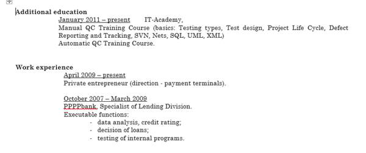
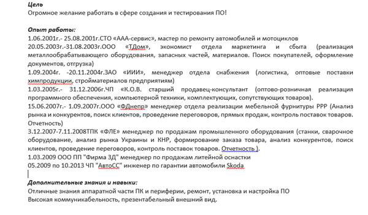
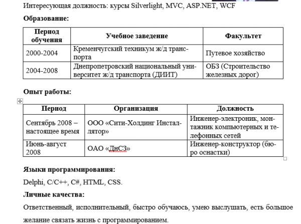
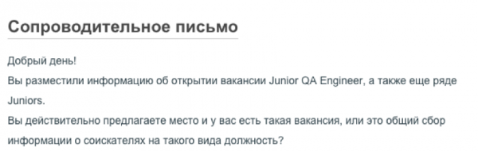
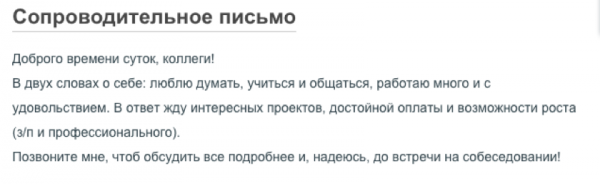

Идеальное резюме Junior’а: как найти лучшую работу в сфере информационных технологий
14 Января, 2015, 10:20
166165
Indigo уже более 7 лет специализируется на подборе IT-персонала. Каждый месяц в наше рекрутинговое агентство начинающие IT-специалисты присылают сотни резюме. Увы, лишь единицы составлены должным образом. Хотите, чтобы именно ваше резюме не попало в корзину и стало пригласительным билетом на собеседование в IT-компанию? Тогда эта памятка для вас.
Посвящается всем джуниорам, загадавшим желание в новом 2015-м году
«Найти лучшую работу в сфере информационных технологий».
Структура резюме
Хорошая новость: нет жестких правил при составлении резюме. Вы сами ставите акценты исходя из того, на какие моменты хотите обратить внимание работодателя.
Допустим, вы решили переквалифицироваться в «айтишника», а за плечами 15 лет работы мерчандайзером. В таком случае, не стоит детально расписывать ваш «неайтишный» опыт работы. Подумайте, как вместить эту информацию в 2-3 строчки. Лучше акцентируйте на пройденных курсах, прочитанных книгах, учебных IT-проектах и посещенных вами мероприятиях с IT-тематикой.
При написании резюме стоит придерживаться следующей логики:
· Фамилия Имя / Name Last Name
· Контакты / Contacts
· Цель / Objective
· Summary
· Навыки / Skills
· Опыт работы / Experience
· Образование / Education
· Дополнительная информация / Additional information
Contacts
Помимо города проживания, email-адреса, телефона и skype-контакта, хорошим тоном считается добавить ссылки на профили в социальных сетях: Linkedin, Github, Facebook. Даже если вы этого не сделаете, рекрутеры все равно их найдут через поисковые системы.
Objective & Summary
Для чего вы составляете резюме? Чтобы получить конкретную работу в конкретной сфере и в конкретной компании. Это и есть цель. Оформите ее в одно предложение и без воды.
Сравните:
“Найти стабильную работу в динамически развивающейся международной компании, чтобы достойно применить свои умения и навыки на благо коллектива”
или
“Начать карьеру junior PHP developer в компании Х и через 5 лет дорасти до тимлида”.
В Summary должно быть до пяти ключевых тезисов, которые в выгодном свете расскажут о вас и вашем опыте. Если же не получается интересно подать ключевые моменты вашей карьеры, лучше пропустите этот раздел.
“I am cheerful and very responsible person. I can easily adapt to any conditions and I am fast learner. I am interested in everything that surrounds me. I like to communicate with new people, like to read and otherwise develop”.
“Junior .net developer”
“Опыт разработки программного обеспечения более 2 лет, последние два года как web-разработчик на Javascript/HTML/CSS/Java. Также имею опыт программирования на С/С++/С#, PHP, AS3, SQL и работы в графических пакетах, таких как Photoshop, CorelDraw и 3DStudio MAX.
Имею хорошие аналитические способности. Легко обучаюсь. Хорошо работаю в коллективе”.
Skills
Уже столько написано на эту тему. Но давайте еще раз рассмотрим варианты, что стоит указывать джунам в разделе Skills.
· четкие измеримые достижения, которые у вас уже есть;
· знание Agile-методологий управления проектами;
· понимание процесса разработки ПО (SDLC);
· опыт организации людей и проектов.
· языки программирования, которые знаете и использовали на практике. Вы наверняка разрабатывали какой-то софт во время учебы в университете — не стесняйтесь, напишите об этом, и тем более поделитесь ссылками на личные разработки;
· API/Frameworks;
· базы данных;
· операционные системы. Windows хороша для .NET-разработчиков, но преимуществом будет ваше знание Linux и мобильных ОС.
· багтрекинговая система — лучше, если не одна и не только в теории;
· знание баз данных;
· уверенный английский (письмо и чтение);
· опыт работы с HTML/CSS;
· понимание основ тестирования, процесса разработки ПО.
Указывать среди навыков офисные программы и используемые браузеры (MS Office, OpenOffice, IE, Mozilla Firefox и т. п.) — это полезно в резюме секретаря, но никак не в сфере IT.
“ Ability to work with such Operating Systems: MS DOS, MS Windows 98/2007/XP/Server Software: MS Office (Word, Excel), Adobe Photoshop, Corel Draw, Internet Explorer, Firefox, Google Chrome, zip/rar/7zip archivers”
Experience
Опыт работы принято писать в обратном порядке. Да, об этом много говорят, но в 5 из 10 резюме кандидаты забывают об этом правиле. Потому лишний раз напоминаем.
В этой части резюме тоже придерживайтесь такой структуры:
· Период работы / Years
· Компания / Company
· Должность / Position
· Обязанности / Role description
· Проекты / Project description
· Технологии, используемые на вашем проекте / Tools and technologies


Education
Название учебного заведения, факультет, специальность, полученная степень, годы обучения.
> если вы недавно закончили ВУЗ, не лишним будет написать тему вашей дипломной работы и средний балл;
> указать IT-курсы, привести примеры проектных работ;
> если не сложилось закончить учебное заведение или же вы еще учитесь, укажите это сразу и кратко напишите причину. Это избавит как минимум от одного дополнительного вопроса.
> указывать в образовании школу будет лишним, особенно если вы закончили ее лет 10 назад и не учились в каком-нибудь крутом лицее информационных технологий;
> перечислять 100500 тренингов в виде списка от тренинговых компаний а-ля «ЧП Пупкин». Напишите лучше: “Каждый год прохожу 5-7 тренингов по управлению командой, клиент-ориентированности, личной эффективности и управлению продажами.”
Additional information
· уровень английского языка. Используйте общепринятые стандарты уровней: Pre-Intermediate, Intermediate, Upper-Intermediate, но никак не Good, Medium, my understanding is better than my speaking;
· семейное положение;
· интересные хобби;
· то, что важно узнать работодателю в разрезе конкретной вакансии. Например, наличие открытой рабочей визы в США.
Подача
У вас не будет второго шанса произвести первое впечатление, поэтому важно не только что вы напишете, но и как вы это оформите.
· Фотография
Конечно, рекрутер только улыбнется вашему фото в шортах и без футболки на фоне моря. Постарайтесь, чтобы фотография была располагающей и дружелюбной, но не «как на паспорт». Стиль casual — самое оно. Если нет подходящей фотокарточки, тогда лучше вообще пропустить этот момент.
· Грамотность
Проверьте свое резюме несколько раз на ошибки и пунктуацию, а лучше — дайте на вычитку грамотному другу.
· Объем
1-2 страницы достаточно. Увлеклись и получилось больше? Посмотрите, что можно убрать:
1. структурируйте и введите списки;
2. уменьшите фото (только не увлекайтесь, 3х4 как раз);
3. слово “Резюме” написали в виде заголовка 18 шрифтом? Удаляйте вообще! Ведь и так понятно, что вы не завещание свое прислали;
4. имя и фамилию написали 22 шрифтом? Вы себе льстите Используйте для заголовка шрифт размером +2 кегля от основного;
5. размер шрифта для основного текста должен быть просто читабельным, чтобы и глаза не щурить, и не уменьшать масштаб. 11 кегль будет в самый раз;
6. никогда не пишите личностные качества в резюме, особенно что вы коммуникабельный, ответственный, порядочный — мы сами выясним это на собеседовании.
· Формат
Лучше всего высылать резюме в формате PDF — и оформление останется красивым, и откроется в любой системе.
Инфографика — тоже хороший вариант. Она наглядно и красиво показывает ваш опыт. В сети есть множество сервисов, которые помогут с ее созданием. Выбирайте по вкусу. Впрочем, если ваше резюме уже попало в базу данных компании, у него будет гораздо меньше шансов быть найденным повторно, ведь нет возможности поиска по ключевым словам в инфографике.
· Язык резюме
English — must have! Судите сами, большинство IT-компаний работают с иностранными заказчиками, потому знание английского в этой сфере становится безоговорочно необходимым. А резюме на английском покажет, что вы как минимум умеете читать/писать и пользоваться переводчиком. Для надежности — попросите знакомого переводчика все проверить.
· Тренды
1. Мобильная версия резюме — не забывайте проверять ваше резюме на читабельность с различных девайсов;
2. Иконки будут симпатично смотреться (например, вместо слов Mobile, Address, Skype, LinkedIn);
3. Используйте гиперссылки;
4. Используйте таблицы на ваше усмотрение, но выглядит это достаточно олдскульно.

А дальше?
Планирование и контроль в поиске работы необходимы. Или вы одни из тех, кто присылает резюме стоматолога на вакансию бизнес-аналитика?
· Промониторьте рынок труда и составьте список компаний с подходящими вакансиями;
· Напишите адресный шаблон сопроводительного письма (cover letter). 3-5 предложений с ответами на 2 вопроса “Почему я хочу работать именно в этой компании?” и “Почему именно я подхожу на данную вакансию?”. Помните, важно корректировать текст для каждой вакансии/компании. Каждый работодатель уникален. Доставьте ему удовольствие почувствовать это


Напомните о себе, если в течение 3-5 дней не получили ответ.
Смело пишите снова с указанием, что вы написали и не получили ответ. Это отличный стимул нам, рекрутерам, придерживаться правила отвечать на все без исключения письма. А вам -показать свою заинтересованность в вакансии.
И главное!
Как бы вы не старались возгордиться собой в резюме, вы сможете это сделать только когда будете позитивным, проактивным и стремящимся к развитию человеком. Читайте книги и интернет-статьи, посещайте IT-мероприятия (календарь на AIN.ua и DOU.ua), проходите обучение на Coursera, получайте сертификаты на IT-курсах, ведите блог, изучайте английский язык, выкладывайте код на Github, задавайте умные вопросы на Stackoverflow, прокачивайте скиллы программиста с помощью Codility и Checkio.
Ну и, конечно, дружите с нами, IT-рекрутерами. Ведь мы — те самые люди, с которыми вы будете в первую очередь общаться при поиске работы
Желаем всем читателям AIN в новом году найти свое место под солнцем айтишного мира!
Авторы: Анна Стеценко, Мария Рудкова